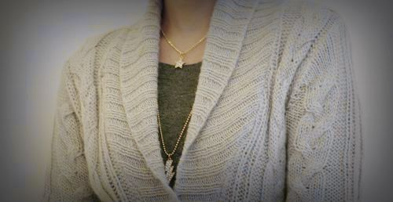

Dress Blog @ Feb 05, 2010
不知道从什么时候开始喜欢上金色饰品，审美的转变也是经历了若干年只选择银色和秀气的设计。金色搭配恰当，能立刻为平常衣装增添大气，前提是品质一定要好。我无法让自己穿成shopping girl或参加某个show的摸样去工作场合，但稍作打扮也是对繁忙工作的一种平衡。对，你的环境也决定了你的穿衣倾向。昨天看到一个穿着迷彩裤的女孩子从电梯前一闪而过，即使美，未免与场合不搭。
山树觉得咖啡色和咸菜色会让人增龄不少，可能真和年龄有关，到了一定年龄原先不能接受的色彩现在却能渐渐让人喜爱。那么，不用急，让我们慢慢享受7色世界，就象享受每个年龄段带来的不同感受。审美，也需要时间来慢慢培养。
亦舒：女人穿得好，不外是天职，男人注意服装，则带来意外的惊喜。
（过于注重打扮的男人，一丝不苟，油头粉面，这个T那个衫讲起来头头是道，这样的男人应该直接变性为女人。）



10 Responses to “Dress Blog”
2010-02-05
沙发,哈哈….
2010-02-05
最近我也特别喜欢金色，看起来很不错
2010-02-06
首页新换的图真好看，前一阶段考试这刚来~
嘿嘿看你写的倒是很想知道你做什么工作呢~
2010-02-07
土豆越来越可爱了~得宠了~不知道luke有没有心理变化。
2010-02-07
作为宠物，要对主人常摇尾巴大显殷勤，土豆很得要领，Luke是靠深沉的眼神打动主人，土豆那两下子，小样。
2010-02-07
去年你的BLOG里面有提到你很敬重很厉害的一位老先生的人生经历,你说有时间的话会写出来.
一直很期待 希望有时间能拜读.
期待
2010-02-07
用手机挣扎露个脸，啊感动？
2010-02-08
感动哦！感动滴想起个早去火车站接你们喽！赶紧补牙，这样才能吃更多好吃的。
2010-02-08
土豆和LUKE好可爱！每次旅行时最想念的就是我的小猫高妮妮。估计你在瑞士时也会时常想她们吧？
2010-02-08
恩，说实话在欧洲时非常想念LUKE，想着以后尽量不出来，当时土豆还没到我家。到了香港，天天打电话问家里人，LUKE怎么样啊在干什么啊，什么表情啊~
Leave A Reply
存档只读，评论已关闭。